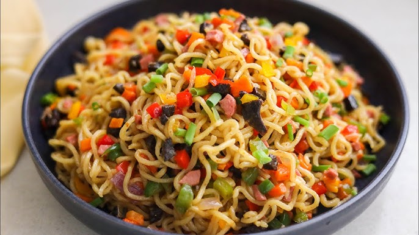

Noodles Recipes

Description
Nigerian noodles are a quick, flavorful meal commonly made with instant noodles like Indomie,
cooked with spices, vegetables, and sometimes eggs or protein.
It's a fast, satisfying dish loved by both kids and adults. perfect for breakfast, lunch, or a late-night snack.
Ingredients
- 1 or 2 packs of instant noodles
- water
- seasoning from the noodles
- Oil or butter
- Chopped onions, pepper, and vegetables (carrot, green pepper, cabbage)
- Eggs, hotdog or liver
Steps
- Boil water and add noodles; cook for 2-3minutes
- Add the seasoning and a little oil; stir well
- Add vegetables and eggs, hotdogs or liver
- Cover and let it cook for another 2 minutes
- stir everything together and serve hot
My Recipes